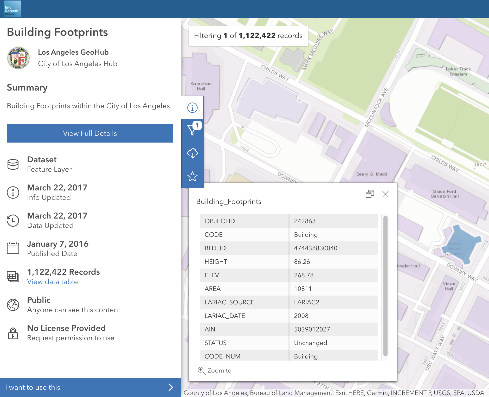
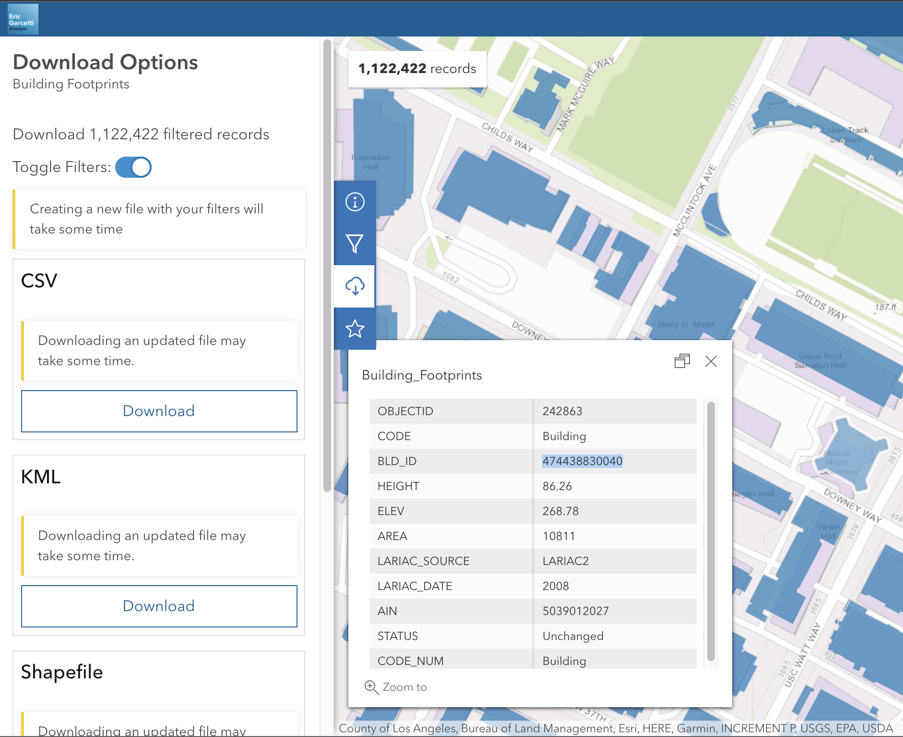

Most public data sources will provide spatial data in GeoJSON format. In the following we are going to see how to download GeoJSON for building footprints from the Los Angeles GeoHub portal.
Click Close Table, zoom in in the map, select a footprint to download and write down the BLD_ID.

Click the icon and filter for your BLD_ID as shown in the figure.
Click the icon, toggle Toggle Filters, and click Download GeoJSON.

To download all the buildings footprints in an area, you can use the Draw an area tool to define the area, then
filter footprints with Filter to this area.
The following Building_Footprints.geojson is an example of such GeoJSON file downloaded from the Los Angeles GeoHub.
Click the entry labeled Neighborhoods select Export, click GeoJSON in the menu. You will be prompted to download a file named Neighborhoods.geojson.
GeoJSON from Los Angeles GeoHub API
Alternatively you can use the API provided by the Los Angeles GeoHub to download GeoJSON data. This is useful if you want to download a large amount of data, or if you want to automate the download process. For the building footprints data, these are the steps to follow:
In the Building Footprints Summary accessible by clicking the icon, click I want to use this button at the bottom left of the page and select View API Resources
The GeoJSON URL provides you with the URL of the api and Open API Explorer lets you configure your API queries with a dialog. For example you can click the + button to filter footprints by ID as shown in the picture below. The URL in the Query URL box can be used in the Browser, or with d3.json